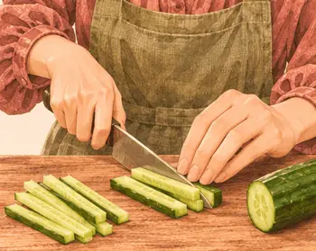
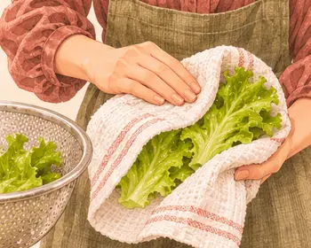
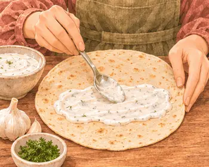
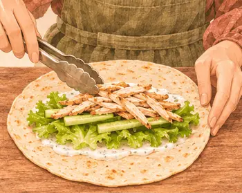
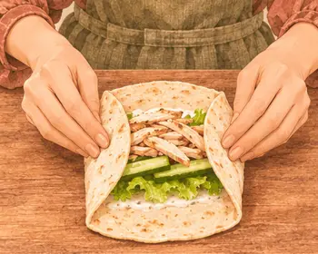
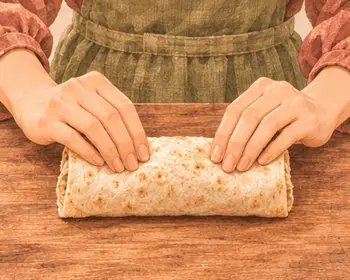

استراحة السابعة · ٧ مساءً
لفافة دجاج صغيرة
١٨٥ سعرة للحصة٣–٥ دقيقة
بروتين٢٢ غ
كربوهيدرات١٤ غ
دهون٤ غ
ألياف٠.٨ غ
كالسيوم٨٤ ملغ
حديد١.٦ ملغ
بوتاسيوم٢٧١ ملغ
فيتامين ج٢ ملغ
القيم الغذائية تقديرية للحصة الواحدة.

مكوّناتك
الوزن بالجرام · حدّد ما جهّزته
| المكوّن | حصة | ٣ حصص | ٤ حصص |
|---|---|---|---|
| ٢٥ | ٧٥ | ١٠٠ | |
| ٦٠ | ١٨٠ | ٢٤٠ | |
| ١٥ | ٤٥ | ٦٠ | |
| ٢٠ | ٦٠ | ٨٠ | |
| ١٠ | ٣٠ | ٤٠ |
الأدوات · سكين، لوح تقطيع، علبة طعام
خطوة صغيرة، وطبق لذيذ
يلا، نطبخها معًا.
خذ وقتك، واتبع الصور على راحتك.
الخطوة٠١
قطّع الدجاج المطبوخ أصابع رفيعة.

الخطوة٠٢
قطّع الخيار أصابع.

الخطوة٠٣
جفّف الخس.

الخطوة٠٤
ادهن وسط الرغيف بزبادي الثوم.

الخطوة٠٥
رصّ الخس والخيار والدجاج.

الخطوة٠٦
اطوِ الجانبين للداخل.

الخطوة٠٧
ارفع الحافة القريبة فوق الحشوة ولفّها.
الخطوة٠٨
برّد اللفافة حتى استراحة السابعة.